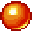
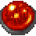
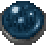

The goal of the game is to survive as long as possible. You can scroll over the map above using the arrow keys or by using the mini-map in the top left. You can build structures from the menu at the bottom right of the map during the build time. After pressing play the game will run for 10 seconds followed by the next build time.
 Portal Health: 100
Portal Health: 100Portals will randomly appear on the map and spawn creeps.
 Creep Health: 10
Creeps walk over the map and attack your nearest structures.
 Tower Health: 10 Cost: 10
Towers deals damage to an enemy nearby. However, it will target your own structures if they are in range and no creeps are within range.
 Harvester Health: 10 Cost: 20
Harvesters pull in the dead bodies of creeps and process them for money. Note that dead creeps decay over time!
 Beacon Health: 1 Cost: 20
Beacon Health: 1 Cost: 20The creeps are drawn by this structure when they are within its range. They do not have very much health though!